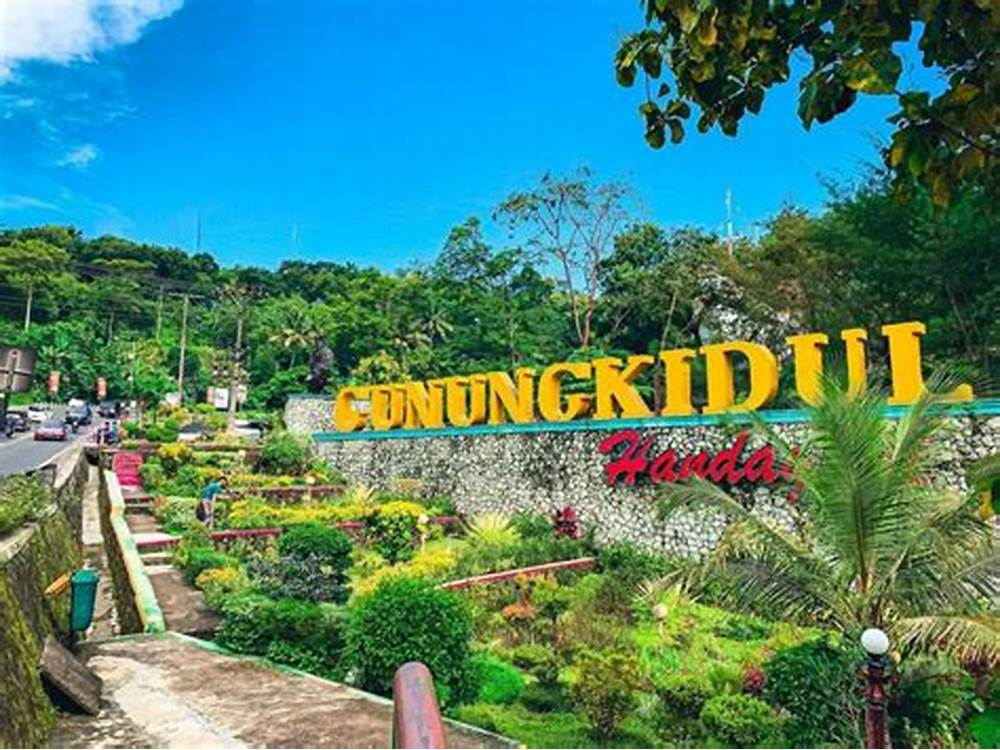

Kabupaten Gunungkidul
D.I. Yogyakarta
Kabupaten Gunungkidul yang ber-Ibukota di Wonosari merupakan salah satu
kabupaten di Daerah Istimewa Yogyakarta yang terletak 39 km sebelah
tenggara Kota Yogyakarta. Luas wilayah Kabupaten Gunungkidul adalah
1.485,36 km2 atau sekitar 46,63 % dari luas wilayah Daerah Istimewa
Yogyakarta.
Status Kabupaten Gunungkidul sebagai salah satu daerah
kabupaten yang berhak mengatur dan mengurus rumah tangganya sendiri
dalam lingkungan Daerah Istimewa Yogyakarta dan berkedudukan di Wonosari
sebagai ibu kota kabupaten, ditetapkan pada tanggal 15 Agustus 1950
dengan UU nomor 15 Tahun 1950 tentang Pembentukan Daerah-daerah
Kabupaten dalam Lingkungan Daerah Istimewa Yogyakarta. Pusat
Pemerintahan Kabupaten Gunungkidul berada di Jalan Brigjen Katamso Nomor
1 Wonosari, Daerah Istimewa Yogyakarta
| No |
Jenis Kelamin |
Jumlah |
| 1 |
Laki-laki |
379.995 jiwa |
| 2 |
Perempuan |
389.912 jiwa |
| 3 |
Total |
769.907 jiwa |
Kecamatan
- Wonosari
- Playen
- Paliyan
- Gedangsari
- Nglipar
- Ngawen
- Semin
- Ponjong
- Karangmojo
- Semanu
- Purwosari
- Panggang
- Saptosari
- Tanjungsari
- Girisubo
- Patuk
- Tepus
- Rongkop
Webiste Pemkab Gunungkidul
